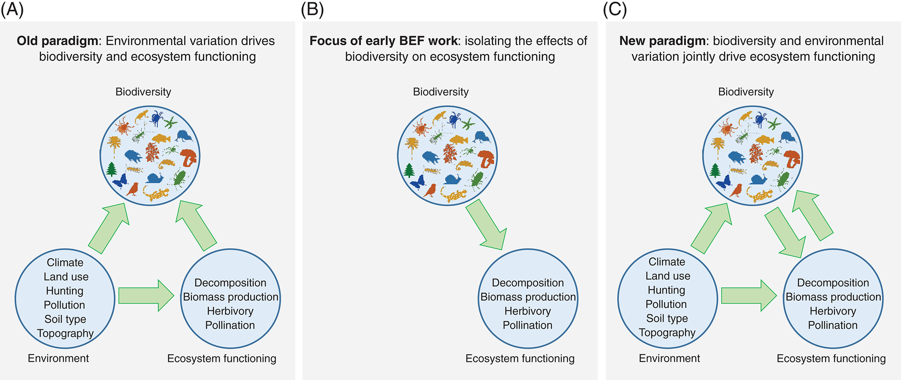
BIO3018F Ecology & Evolution - 2023 Practical

This section covers the analysis and write-up of the practical we did on Biodiversity and Ecosystem Function in the Cape Floristic Region.
I provide R code below, which you can run on your own laptops if you have R installed (and it helps to have RStudio or similar). Alternatively, you can sign up for an account on Posit Cloud, which allows you to run the code on a cloud machine from your internet browser. Make sure to use your university email address as it allows you more free resources.
Introduction
Our understanding of and approach to studying the relationship between biodiversity and ecosystem function (B-EF) has evolved over the past few decades (Figure 1; van der Plas 2019). The historical view was one of biodiversity as the response variable, being determined by environmental and anthropogenic factors, with little feedback to ecosystem function. In the early 1990s, this shifted (and perhaps overcompensated) to focus on the causal effects of variation in biodiversity on ecosystem functioning, with little emphasis on the role of environmental variation. More recently, there is recognition that biodiversity both responds to the environment and partly drives ecosystem function in concert with environmental variation. The current focus of most B-EF research is on the relative importance of abiotic drivers (natural and anthropogenic) versus biotic variation in determining various ecosystem functions.
The Cape Floristic Region (CFR) of South Africa is one of the most botanically diverse areas on the planet. The indigenous flora of the CFR has several components with different evolutionary and biogeographic origins (Figure 2; Bergh et al. 2014), and distinct differences in a range of ecosystem functions. The CFR also has a long history of global change impacts, from direct anthropogenic disturbance (e.g. land use / land cover) to the introduction of invasive alien species. This provides a range of highly varied natural and modified ecosystem types within close proximity, that often share or contrast in their biotic composition (species, functional and phylogenetic diversity) and abiotic conditions - climate, soils and disturbance regimes (fire, herbivory).
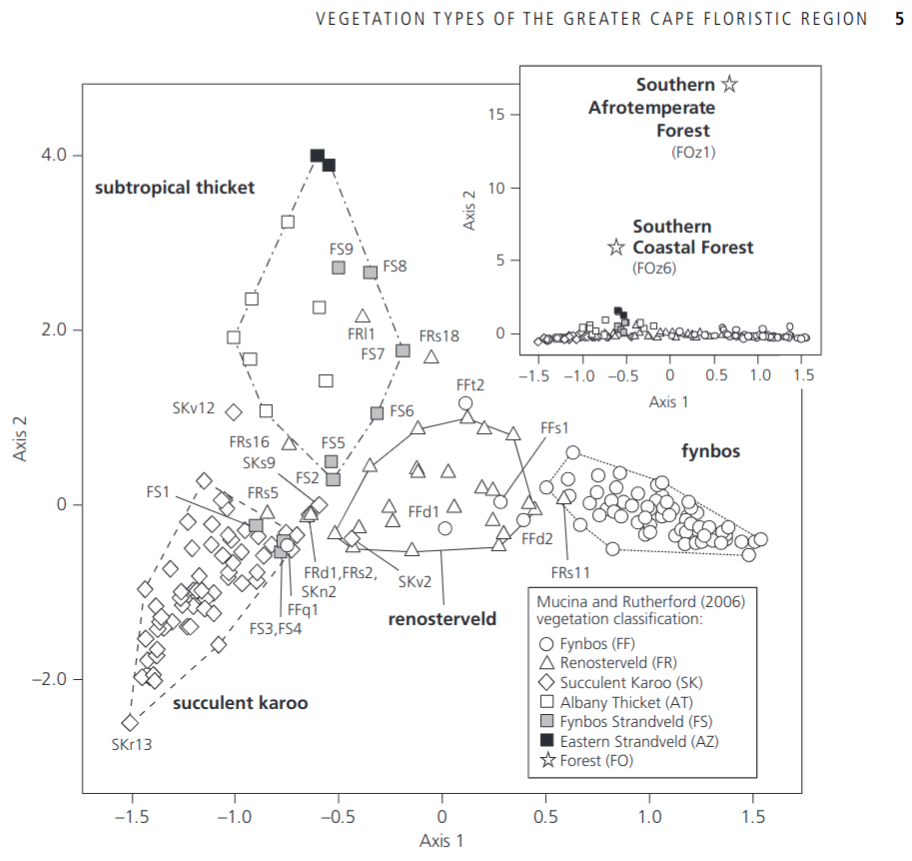
In this practical, we will investigate the Biodiversity-Ecosystem Function paradigms in Figure 1 by investigating the relationships among a set of ecosystem types using measures of biodiversity (species and functional \(\alpha\) and \(\beta\) diversity) and exploring their relationship to various environmental conditions and a set of metrics of ecosystem function derived from satellite timeseries.
The questions are:
Does the variation in environmental conditions explain the observed variation in biodiversity (species, functional and phylogenetic \(\alpha\) and \(\beta\) diversity)?
To what degree does the variation in functional and phylogenetic diversity explain the observed variation in our measures of ecosystem function?
What is the relative role of the environment versus biodiversity in determining the observed variation in ecosystem function?
Finally, consider this practical a descriptive study. In your discussion, describe a follow-up study that you would perform to discern cause from correlation and partition the relative influence of environmental conditions versus biodiversity on our measures of ecosystem function.
Methods
Field Methods
The sites were selected to represent contrasting vegetation, differing either in their abiotic template or degree to which they have been modified, but to all be the same (or similar) post-fire age (time since last fire). We will split into 4 teams of 2 or 3. Each pair will survey a point location (towards the corners) within the 250 by 250m MODIS satellite mission pixel that makes up each site.
Each team will need:
- One or more smartphones
- 2 x 10m measuring tape (or longer)
- 1 x clipboard, paper and pen or pencil
- 1 x densiometer
- 1 x metre rule
- 1 x Vernier calipers
- 8 x large plastic bags for carrying soil and plant samples for each point location
- 8 x soil sample bags
- 2 x masking tape
- 2 x marker pen
At each site, navigate to your team’s point location, lay out the two tapes at 90 degrees, crossing at 3.2m and ending at 6.4m. Consider this your guide for a 3.2m radius (~20m2) circle. Within the circle we will measure:
- Environmental conditions:
Estimate % projected cover (think the area you would see from above) bare soil
Take a densiometer reading at ground level. To do this, hold the densiometer level on the soil surface. Pick a spot close to the centre, but try not to pick an obviously open (or closed) patch, it should be representative of the location. To take a reading, split each square into quarters and score them for the amount of light visible - a value from 0 (complete canopy cover) to 4 (no vegetation visible)-counting up these values for all 24 squares (to a maximum of 96), and write this down. We will convert this to canopy cover later, applying the formula\(100 - 1.04*X\),where\(X\)is your reading.Take a soil sample (we are going to pool the 4 samples per site). These we will process for soil pH.Do a dung count, scoring dung for the point location by the number of quarters where you find dung (i.e. a single score from 0-4 for the point location). Try to avoid scoring obvious single scat (“dung creation”) events in more than one quadrat, unless it’s an impressive pile.
Take a few notes (and photos) on any other features that you think may be important or interesting (slope, rockiness, whatever).
- Diversity sampling:
First, make sure your smartphone is fully charged and set to record GPS location with your photographs!
With your team, decide on which are the top 5 species by % projected cover. If your site is dominated by fewer than 5 species, count up as many species as make up 80% of the vegetation.
Take diagnostic photos for the 5 species (habit (whole plant), leaf, base, flowers and/or fruits).
For each of three individuals of your 5 target species, measure the height and canopy diameter in 2 dimensions (perpendicular). Then collect shoots for measuring leaf traits back at the lab (leaf length, width, area and dry mass). You need to collect enough to be able to process at least 3 leaves per sample (more if the species has tiny leaves). Mark each sample with masking tape and put in sample bag for the site.
Finally, set a timer and take as many photos of new species (other than your 5 target species) within or near your plot as you can before the alarm goes off. Make sure to take a photo of your site label on your sample bag between sites so you know which photos were collected at which sites. When we get back to base you will upload the photos to folders in the intranet labeled by site.
Ecosystem function
To explore ecosystem function we looked at the 20-year time series of the Normalized Difference Vegetation Index (NDVI) recorded by the MODIS satellite mission. From these we used the post-fire recovery trajectory modelling framework developed by Wilson et al. (2015) to derive estimates of a series of parameters that we will use as our measures of ecosystem function. These are illustrated in the figure and explained below:
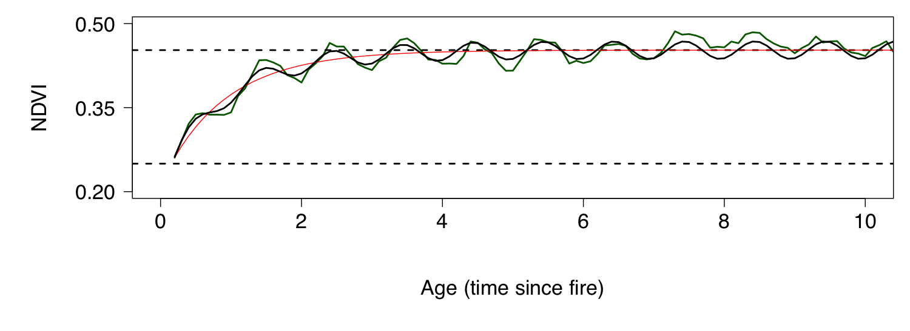
- alpha = starting NDVI after a fire (lower stippled line )
- gamma = the difference between alpha and the asymptote of NDVI (i.e. alpha + gamma = estimated steady long-term NDVI (upper stippled line))
- lambda = 1/recovery rate after fire (i.e. the smaller the value the faster the rate of recovery)
- A = the magnitude of seasonality (the absolute value indicates the magnitude, ignore the sign (+/-) for now)
- phi = the timing of seasonality
Data
Ok, now you need the data! These can be downloaded here.
- Download it and put it somewhere sensible
- If you downloaded them as a Zip file, Unzip it
- Wherever I read in data in the code below you will need to change the file path to match where you have it on your computer. e.g. where I say:
sdat <- read_xlsx("data/pracdatasheet2023.xlsx", sheet = "Species2023")you need to change it to match your file path, like:sdat <- read_xlsx("C:\\Documents\\bio3018f_pracdata\\pracdatasheet2023.xlsx", sheet = "Species2023")- NOTE that Windows wants backslashes for some reason!
Analyses
Here I work through a series of analyses, providing R code to look at measures of biodiversity (species and functional), environment and ecosystem function. I then demonstrate a few statistical tests. Some of the results you can use as is. Others you should fiddle with the code to address the questions you want to ask.
Species Alpha Diversity
For this I have just taken the count of species encountered at each point during our rapid photographic surveys, and the aggregated set of unique species for each site (i.e. no rarefaction etc).
Discussion hint: Do you think this is an issue for the method we used? Are there any biases we may have introduced? Justify your answer.
Sites
R code:
# Call libraries (you may need to uncomment and run the first line to install them)
#install.packages(c("tidyverse", "readxl", "knitr", "FSA", "picante", "sf", "MODISTools"))
library(tidyverse)
library(readxl)
library(knitr)
library(FSA)
library(picante)
# Read in data
sdat <- read_xlsx("data/pracdatasheet2023.xlsx", sheet = "Species2023")
# Select indigenous or invasive species only
#sdat <- sdat %>% filter(is.na(Alien))
#sdat <- sdat %>% filter(Alien == 1)
# Get list of species by site
#dat %>% select(Site,FullName) %>% unique() %>% View()
# Get count of species by site
site_SD <- sdat %>%
# filter(Point == "SE") %>% # If you wnt to select only one corner - SE in this case
select(Site, FullName) %>%
unique() %>%
group_by(Site) %>%
summarize(`Species Number` = n())
# Present as a table
kable(site_SD)| Site | Species Number |
|---|---|
| grass | 17 |
| invasion | 15 |
| renosterveld | 19 |
| sand | 25 |
| sandstone | 24 |
Point locations
R code:
# Get count of species by point
point_SD <- sdat %>%
mutate(PointName = paste(Site, Point, sep = "_")) %>%
select(PointName, FullName) %>%
unique() %>%
group_by(PointName) %>%
summarize(`Species Number` = n())
# Present as a table
kable(point_SD)| PointName | Species Number |
|---|---|
| grass_NE | 4 |
| grass_NW | 7 |
| grass_SE | 3 |
| grass_SW | 9 |
| invasion_NE | 10 |
| invasion_NW | 6 |
| invasion_SE | 8 |
| invasion_SW | 6 |
| renosterveld_NE | 6 |
| renosterveld_NW | 13 |
| renosterveld_SE | 9 |
| renosterveld_SW | 6 |
| sand_NE | 12 |
| sand_NW | 9 |
| sand_SE | 18 |
| sand_SW | 8 |
| sandstone_NE | 7 |
| sandstone_NW | 11 |
| sandstone_SE | 19 |
| sandstone_SW | 7 |
Species Beta Diversity
Here I calculate species beta diversity using Sorenson’s distance.
Discussion hint: Why can’t we do Bray-Curtis? What would we gain if we could?
Sites
R code:
# Make a community data matrix
site_comm <- sdat %>%
mutate(Abundance = 1) %>%
select(Site, FullName, Abundance) %>%
unique() %>%
pivot_wider(names_from = FullName,
values_from = Abundance,
values_fill = 0)
# This requires some tomfoolery to set the row names from the first column to get the community data into the desired format for the designdist() function
site_comm <- as.data.frame(unclass(site_comm))
rownames(site_comm) <- site_comm[,1]
site_comm <- site_comm[,-1]
# Calculate Sorenson's distances
site_BD <- designdist(site_comm, method = "(A+B-2*J)/(A+B)", terms = "binary")
# some tomfoolery to present it nicely... (kable() doesn't like class "dist" - i.e. distance objects)
msite_BD <- as.data.frame(as.matrix(site_BD)) # make it a rectangular table
msite_BD[upper.tri(msite_BD, diag = T)] <- NA # set the top-right to "NA"
options(knitr.kable.NA = '') # set the kable() table printing function to make NA values blank
# Present as a table
kable(msite_BD, digits = 3)| grass | invasion | renosterveld | sand | sandstone | |
|---|---|---|---|---|---|
| grass | |||||
| invasion | 0.938 | ||||
| renosterveld | 0.778 | 0.941 | |||
| sand | 0.952 | 0.900 | 0.955 | ||
| sandstone | 0.951 | 0.846 | 0.953 | 0.551 |
Point locations
R code:
# Make a community data matrix
point_comm <- sdat %>%
mutate(PointName = paste(Site, Point, sep = "_"), Abundance = 1) %>%
select(PointName, FullName, Abundance) %>%
unique() %>%
pivot_wider(names_from = FullName,
values_from = Abundance,
values_fill = 0)
# tomfoolery to set the row names from the first column to get the community data into the desired format for the designdist function
point_comm <- as.data.frame(unclass(point_comm))
rownames(point_comm) <- point_comm[,1]
point_comm <- point_comm[,-1]
# Calculate Sorenson's distances
point_BD <- designdist(point_comm, method = "(A+B-2*J)/(A+B)", terms = "binary")
# some tomfoolery to present it nicely... (kable() doesn't like class "dist" - i.e. distance objects)
mpoint_BD <- as.data.frame(as.matrix(point_BD)) # make it a rectangular table
mpoint_BD[upper.tri(mpoint_BD, diag = T)] <- NA # set the top-right to "NA"
options(knitr.kable.NA = '') # set the kable() table printing function to make NA values blank
# Present as a table
kable(mpoint_BD, digits = 3)| grass_NE | grass_NW | grass_SE | grass_SW | invasion_NE | invasion_NW | invasion_SE | invasion_SW | renosterveld_NE | renosterveld_NW | renosterveld_SE | renosterveld_SW | sand_NE | sand_NW | sand_SE | sand_SW | sandstone_NE | sandstone_NW | sandstone_SE | sandstone_SW | |
|---|---|---|---|---|---|---|---|---|---|---|---|---|---|---|---|---|---|---|---|---|
| grass_NE | ||||||||||||||||||||
| grass_NW | 0.636 | |||||||||||||||||||
| grass_SE | 0.429 | 0.600 | ||||||||||||||||||
| grass_SW | 0.692 | 0.750 | 0.667 | |||||||||||||||||
| invasion_NE | 0.857 | 0.882 | 0.846 | 0.895 | ||||||||||||||||
| invasion_NW | 0.800 | 0.846 | 0.778 | 0.867 | 0.500 | |||||||||||||||
| invasion_SE | 0.833 | 0.867 | 0.818 | 0.882 | 0.667 | 0.286 | ||||||||||||||
| invasion_SW | 0.800 | 0.846 | 0.778 | 0.867 | 0.625 | 0.333 | 0.286 | |||||||||||||
| renosterveld_NE | 0.800 | 0.692 | 0.778 | 0.867 | 0.875 | 0.833 | 0.857 | 0.833 | ||||||||||||
| renosterveld_NW | 0.882 | 0.600 | 0.875 | 0.909 | 0.913 | 0.895 | 0.905 | 0.895 | 0.579 | |||||||||||
| renosterveld_SE | 0.846 | 0.625 | 0.833 | 0.889 | 0.895 | 0.867 | 0.882 | 0.867 | 0.733 | 0.545 | ||||||||||
| renosterveld_SW | 0.800 | 0.538 | 0.778 | 0.867 | 0.875 | 0.833 | 0.857 | 0.833 | 0.833 | 0.474 | 0.333 | |||||||||
| sand_NE | 0.875 | 0.895 | 0.867 | 0.905 | 0.909 | 0.889 | 0.900 | 0.889 | 0.889 | 0.920 | 0.905 | 0.889 | ||||||||
| sand_NW | 0.846 | 0.875 | 0.833 | 0.889 | 0.789 | 0.867 | 0.882 | 0.733 | 0.867 | 0.909 | 0.889 | 0.867 | 0.524 | |||||||
| sand_SE | 0.909 | 0.920 | 0.905 | 0.926 | 0.857 | 0.917 | 0.923 | 0.833 | 0.917 | 0.935 | 0.926 | 0.917 | 0.400 | 0.556 | ||||||
| sand_SW | 0.833 | 0.867 | 0.818 | 0.882 | 0.778 | 0.857 | 0.875 | 0.714 | 0.857 | 0.905 | 0.882 | 0.857 | 0.700 | 0.529 | 0.692 | |||||
| sandstone_NE | 0.818 | 0.857 | 0.800 | 0.875 | 0.882 | 0.846 | 0.867 | 0.846 | 0.846 | 0.900 | 0.875 | 0.846 | 0.684 | 0.875 | 0.840 | 0.733 | ||||
| sandstone_NW | 0.867 | 0.889 | 0.857 | 0.900 | 0.810 | 0.882 | 0.789 | 0.882 | 0.882 | 0.917 | 0.900 | 0.882 | 0.565 | 0.700 | 0.793 | 0.789 | 0.444 | |||
| sandstone_SE | 0.913 | 0.923 | 0.909 | 0.929 | 0.862 | 0.920 | 0.852 | 0.920 | 0.920 | 0.938 | 0.929 | 0.920 | 0.613 | 0.714 | 0.568 | 0.852 | 0.615 | 0.467 | ||
| sandstone_SW | 0.818 | 0.857 | 0.800 | 0.875 | 0.882 | 0.846 | 0.733 | 0.846 | 0.846 | 0.900 | 0.875 | 0.846 | 0.789 | 0.750 | 0.920 | 0.733 | 0.571 | 0.556 | 0.538 |
Trait means
Recall that I discussed the difference between direct trait effects and diversity effects in the lecture on Biodiversity and Ecosystem Function. Here I calculate the Community Weighted Mean (CWM) values for the traits we sampled. Note that the “weighted” indicates that the trait means are usually weighted by species abundance, cover, biomass etc. Since we only have presence/absence data wll weights will be 1.
Firstly, by site.
R code:
# Read in data
tdat <- read_xlsx("data/pracdatasheet2023.xlsx", sheet = "Traits2023")
# Extract species trait means
traitspecies <- tdat %>%
group_by(FullName) %>%
summarize(PlantHeight_cm = mean(PlantHeight_cm, na.rm = T),
LeafLength_mm = mean(LeafLength_mm, na.rm = T),
LeafDryMass_g = mean(LeafDryMassPerLeaf_g, na.rm = T),
LeafMassPerLength = mean(LeafDryMassPerLeaf_g, na.rm = T)/mean(LeafLength_mm, na.rm = T)) %>%
na.omit() # Drop and NA entries
# Get list of species by site
trsite <- tdat %>% select(Site, FullName) %>% unique()
# Join list of species by site to the trait means and add column of weights
traitsite <- left_join(trsite, traitspecies) %>% mutate(Weights = 1)
# Calculating CWM
sitecwm <- # New dataframe where we can inspect the result
traitsite %>% # First step in the next string of statements
group_by(Site) %>% # Groups the summary file by site
summarize( # Coding for how we want our CWMs summarized
Height_cwm = weighted.mean(PlantHeight_cm, Weights, na.rm = T), # Actual calculation of CWMs
LeafLength_cwm = weighted.mean(LeafLength_mm, Weights, na.rm = T),
LeafDryMass_cwm = weighted.mean(LeafDryMass_g, Weights, na.rm = T),
LeafMassPerLength_cwm = weighted.mean(LeafMassPerLength, Weights, na.rm = T)
)
# Present as a table
kable(sitecwm, digits = 3)| Site | Height_cwm | LeafLength_cwm | LeafDryMass_cwm | LeafMassPerLength_cwm |
|---|---|---|---|---|
| grass | 131.843 | 10.867 | 0.107 | 0.016 |
| invasion | 260.415 | 22.653 | 0.308 | 0.012 |
| renosterveld | 40.000 | 15.169 | 0.059 | 0.005 |
| sand | 102.345 | 14.651 | 0.458 | 0.020 |
| sandstone | 91.787 | 96.312 | 0.469 | 0.014 |
Some of these numbers look quite surprising, but you can have a look at the individual objects we created by typing them into your R console, e.g. traitsite.
Now, by point.
R code:
# Get list of species by point
trpoint <- tdat %>% select(SitePoint, FullName) %>% unique()
# Join list of species by site to the trait means and add column of weights
traitpoint <- left_join(trpoint, traitspecies) %>% mutate(Weights = 1)
# Calculating CWM
pointcwm <- # New dataframe where we can inspect the result
traitpoint %>% # First step in the next string of statements
group_by(SitePoint) %>% # Groups the summary file by site
summarize( # Coding for how we want our CWMs summarized
Height_cwm = weighted.mean(PlantHeight_cm, Weights, na.rm = T), # Actual calculation of CWMs
LeafLength_cwm = weighted.mean(LeafLength_mm, Weights, na.rm = T),
LeafDryMass_cwm = weighted.mean(LeafDryMass_g, Weights, na.rm = T),
LeafMassPerLength_cwm = weighted.mean(LeafMassPerLength, Weights, na.rm = T)
)
# Present as a table
kable(pointcwm, digits = 3)| SitePoint | Height_cwm | LeafLength_cwm | LeafDryMass_cwm | LeafMassPerLength_cwm |
|---|---|---|---|---|
| grass_NE | 39.796 | 27.033 | 0.064 | 0.002 |
| grass_NW | 127.522 | 15.273 | 0.101 | 0.011 |
| grass_SE | 21.944 | 11.067 | 0.241 | 0.026 |
| grass_SW | 176.500 | 3.100 | 0.056 | 0.017 |
| invasion_NE | 156.908 | 14.564 | 0.231 | 0.008 |
| invasion_NW | 373.100 | 54.486 | 0.715 | 0.018 |
| invasion_SE | 407.580 | 18.689 | 0.331 | 0.019 |
| invasion_SW | 342.671 | 33.138 | 0.404 | 0.014 |
| renosterveld_NE | 37.033 | 13.480 | 0.064 | 0.004 |
| renosterveld_NW | 54.956 | 14.847 | 0.064 | 0.006 |
| renosterveld_SE | 34.967 | 15.233 | 0.053 | 0.003 |
| renosterveld_SW | 47.533 | 16.927 | 0.067 | 0.006 |
| sand_NE | 82.443 | 9.947 | 0.410 | 0.023 |
| sand_NW | 79.527 | 10.478 | 0.421 | 0.025 |
| sand_SE | 95.355 | 21.996 | 0.757 | 0.027 |
| sand_SW | 127.714 | 11.937 | 0.477 | 0.030 |
| sandstone_NE | 107.639 | 221.248 | 1.033 | 0.018 |
| sandstone_NW | 86.976 | 146.391 | 0.100 | 0.002 |
| sandstone_SE | 98.589 | 203.793 | 0.406 | 0.012 |
| sandstone_SW | 100.989 | 20.447 | 0.686 | 0.020 |
Functional Alpha Diversity
Here I’ve estimated Functional Diversity (FD) according to the method of Petchey and Gaston (2002) for each of the points and aggregated sites using only the dominant species for which we measured traits. To apply Petchey and Gaston’s method, we first need to estimate a functional dendrogram representing the functional similarity among species based on the traits we measured.
R code:
# Extract species trait means and scale them to mean = 0 and sd = 0
traits <- tdat %>%
group_by(FullName) %>%
summarize(PlantHeight_cm = mean(PlantHeight_cm, na.rm = T),
LeafLength_mm = mean(LeafLength_mm, na.rm = T),
LeafDryMass_g = mean(LeafDryMassPerLeaf_g, na.rm = T),
LeafMassPerLength = mean(LeafDryMassPerLeaf_g, na.rm = T)/mean(LeafLength_mm, na.rm = T)) %>%
mutate(across(where(is.numeric), scale)) %>% #Note this line is different to "traitspecies" above
na.omit() # Drop and NA entries
# Use the traits to create a distance matrix for the species
trt <- as.matrix(traits[,-1])
rownames(trt) <- traits$FullName
D <- dist(trt)
# Use this distance matrix to construct a dendrogram that represents the similarity/dissimilarity among species according to their traits
tree <- hclust(D,"average")
# Transform the dendrogram into an object of class 'phylo' (needed for the next step)
ptree <- as.phylo(tree)
# Remove unnecessary objects to keep the workspace tidy
rm(trt, D, tree)
# Plot the tree to see the relationships among species
plot(ptree, cex = 0.45)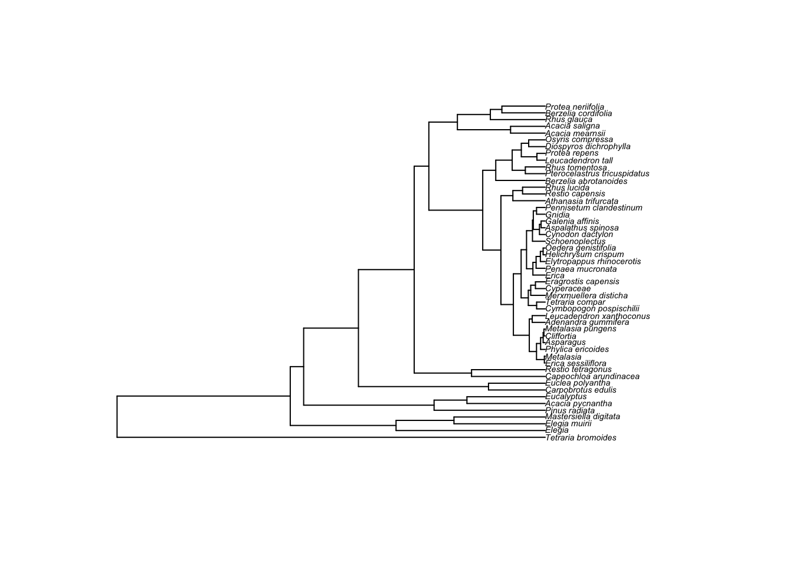
FD by Site
R code:
# Make a community data matrix for the sites
samp <- tdat %>% # For sites, lumping all points together
mutate(PointName = paste(Site, Point, sep = "_"), # Make a new name column combining Site and Point
Abundance = 1) %>% # Use number of point occurrences as "pseudo-abundance"
select(Site, PointName, FullName, Abundance) %>% # Select the columns we want
unique() %>% # Remove duplicates (there were 3 reps for each species by point)
group_by(FullName, Site) %>% # For each species within each site...
summarize(Abundance = sum(Abundance)) %>% # ...sum the abundances
pivot_wider(names_from = FullName,
values_from = Abundance,
values_fill = 0) %>% # Turn the 3 columns into a species by site community data matrix
na.omit() # Drop and NA entries
# Calculate the functional diversity for each site - see ?pd for details. Note that while the function was written for phylogenetic diversity, we've used it for functional diversity.
sampFD <- pd(samp[,-1], ptree)
# Make pretty and print table for sites
rownames(sampFD) <- samp$Site
colnames(sampFD)[1] <- "FD"
kable(sampFD, digits = 3)| FD | SR | |
|---|---|---|
| invasion | 10.696 | 11 |
| sandstone | 13.244 | 12 |
| renosterveld | 5.237 | 12 |
| grass | 9.960 | 14 |
| sand | 9.191 | 10 |
Remember the “species richness” (SR) here is the number of dominant species sampled for traits, not all species observed as above.
FD by point location:
R code:
# Make a community data matrix for the points within sites
pointsamp <- tdat %>% # For points within sites
mutate(PointName = paste(Site, Point, sep = "_"), # Make a new name column combining Site and Point
Abundance = 1) %>% # Use number of occurrences as pseudo-abundance
select(PointName, FullName, Abundance) %>% # Select the 3 columns we want
unique() %>% # Remove duplicates (there were 3 reps for each species by point)
pivot_wider(names_from = FullName,
values_from = Abundance,
values_fill = 0) %>% # Turn the 3 columns into a species by point community data matrix
na.omit() # Drop and NA entries
# Calculate FD for points
pointsampFD <- pd(pointsamp[,-1], ptree)
# Make pretty and print table for point locations
rownames(pointsampFD) <- pointsamp$PointName
colnames(pointsampFD)[1] <- "FD"
kable(pointsampFD, digits = 3)| FD | SR | |
|---|---|---|
| grass_NW | 6.049 | 5 |
| renosterveld_NW | 4.406 | 5 |
| invasion_NW | 7.266 | 4 |
| sand_NW | 7.175 | 4 |
| sandstone_NW | 7.974 | 7 |
| grass_SW | 5.611 | 5 |
| renosterveld_SW | 4.524 | 5 |
| invasion_SW | 8.285 | 5 |
| sand_SW | 7.167 | 5 |
| sandstone_SW | 7.803 | 5 |
| grass_NE | 3.928 | 5 |
| renosterveld_NE | 4.481 | 5 |
| invasion_NE | 6.349 | 5 |
| sand_NE | 7.069 | 4 |
| sandstone_NE | 10.854 | 5 |
| grass_SE | 5.230 | 2 |
| renosterveld_SE | 4.153 | 5 |
| invasion_SE | 8.744 | 5 |
| sand_SE | 8.106 | 5 |
| sandstone_SE | 9.696 | 5 |
Functional Beta Diversity
I’ve estimated functional similarity between sites using the method of Bryant et al. 2008. See help file ?picante::phylosor in R for details to help know how to interpret. Note that while the function was written for phylogenetic similarity, we’ve used it for functional similarity.
R code:
# calculate functional turnover between sites
sampBFD <- phylosor(samp[,-1], ptree)
# some tomfoolery to present it nicely... (kable() doesn't like class "dist" - i.e. distance objects)
msampBFD <- as.data.frame(as.matrix(sampBFD))
dimnames(msampBFD) <- list(samp$Site, samp$Site)
msampBFDl <- msampBFD # make a new object and keep msampBFD, because you can use it with function metaMDS()
msampBFDl[upper.tri(msampBFDl, diag = T)] <- NA
options(knitr.kable.NA = '') # set table printing function to make NA values blank
kable(msampBFDl, digits = 3) # print a table| invasion | sandstone | renosterveld | grass | sand | |
|---|---|---|---|---|---|
| invasion | |||||
| sandstone | 0.309 | ||||
| renosterveld | 0.423 | 0.400 | |||
| grass | 0.547 | 0.423 | 0.512 | ||
| sand | 0.410 | 0.542 | 0.520 | 0.467 |
And between point locations?
R code:
# calculate functional turnover between sites
pointsampBFD <- phylosor(pointsamp[,-1], ptree)
# some tomfoolery to present it nicely... (kable() doesn't like class "dist" - i.e. distance objects)
pmsampBFD <- as.data.frame(as.matrix(pointsampBFD))
dimnames(pmsampBFD) <- list(pointsamp$PointName, pointsamp$PointName)
pmsampBFDl <- pmsampBFD # make a new object and keep msampBFD, because you can use it with function metaMDS()
pmsampBFDl[upper.tri(pmsampBFDl, diag = T)] <- NA
options(knitr.kable.NA = '') # set table printing function to make NA values blank
kable(pmsampBFDl, digits = 3) # print a table| grass_NW | renosterveld_NW | invasion_NW | sand_NW | sandstone_NW | grass_SW | renosterveld_SW | invasion_SW | sand_SW | sandstone_SW | grass_NE | renosterveld_NE | invasion_NE | sand_NE | sandstone_NE | grass_SE | renosterveld_SE | invasion_SE | sand_SE | sandstone_SE | |
|---|---|---|---|---|---|---|---|---|---|---|---|---|---|---|---|---|---|---|---|---|
| grass_NW | ||||||||||||||||||||
| renosterveld_NW | 0.705 | |||||||||||||||||||
| invasion_NW | 0.588 | 0.433 | ||||||||||||||||||
| sand_NW | 0.510 | 0.600 | 0.350 | |||||||||||||||||
| sandstone_NW | 0.505 | 0.597 | 0.332 | 0.463 | ||||||||||||||||
| grass_SW | 0.578 | 0.673 | 0.393 | 0.630 | 0.534 | |||||||||||||||
| renosterveld_SW | 0.727 | 0.978 | 0.429 | 0.594 | 0.591 | 0.665 | ||||||||||||||
| invasion_SW | 0.664 | 0.531 | 0.854 | 0.454 | 0.447 | 0.570 | 0.526 | |||||||||||||
| sand_SW | 0.471 | 0.537 | 0.350 | 0.874 | 0.411 | 0.620 | 0.532 | 0.445 | ||||||||||||
| sandstone_SW | 0.503 | 0.584 | 0.335 | 0.592 | 0.496 | 0.537 | 0.578 | 0.444 | 0.536 | |||||||||||
| grass_NE | 0.771 | 0.885 | 0.451 | 0.607 | 0.595 | 0.707 | 0.886 | 0.552 | 0.561 | 0.594 | ||||||||||
| renosterveld_NE | 0.706 | 0.861 | 0.430 | 0.610 | 0.582 | 0.668 | 0.874 | 0.528 | 0.534 | 0.580 | 0.868 | |||||||||
| invasion_NE | 0.544 | 0.627 | 0.535 | 0.554 | 0.517 | 0.665 | 0.620 | 0.579 | 0.513 | 0.509 | 0.656 | 0.622 | ||||||||
| sand_NE | 0.531 | 0.621 | 0.353 | 0.955 | 0.502 | 0.636 | 0.615 | 0.457 | 0.881 | 0.632 | 0.633 | 0.617 | 0.559 | |||||||
| sandstone_NE | 0.399 | 0.442 | 0.279 | 0.632 | 0.774 | 0.440 | 0.438 | 0.373 | 0.586 | 0.633 | 0.456 | 0.440 | 0.422 | 0.636 | ||||||
| grass_SE | 0.646 | 0.723 | 0.404 | 0.543 | 0.528 | 0.622 | 0.726 | 0.499 | 0.502 | 0.704 | 0.795 | 0.735 | 0.582 | 0.566 | 0.419 | |||||
| renosterveld_SE | 0.726 | 0.904 | 0.443 | 0.595 | 0.610 | 0.690 | 0.923 | 0.542 | 0.550 | 0.596 | 0.891 | 0.883 | 0.642 | 0.635 | 0.449 | 0.755 | ||||
| invasion_SE | 0.608 | 0.473 | 0.830 | 0.421 | 0.372 | 0.522 | 0.469 | 0.837 | 0.463 | 0.376 | 0.491 | 0.470 | 0.667 | 0.424 | 0.317 | 0.445 | 0.482 | |||
| sand_SE | 0.476 | 0.539 | 0.329 | 0.890 | 0.436 | 0.635 | 0.534 | 0.468 | 0.881 | 0.557 | 0.560 | 0.536 | 0.534 | 0.896 | 0.601 | 0.506 | 0.550 | 0.437 | ||
| sandstone_SE | 0.428 | 0.478 | 0.298 | 0.689 | 0.824 | 0.471 | 0.474 | 0.397 | 0.626 | 0.534 | 0.495 | 0.476 | 0.449 | 0.693 | 0.929 | 0.452 | 0.487 | 0.337 | 0.653 |
Environment
First, let’s calculate % canopy cover from the densiometer readings and then look at site-level averages for most variables.
R code:
pdat <- read_xlsx("data/pracdatasheet2023.xlsx", sheet = "Sites2023")
names(pdat) [1] "Site" "Point" "SitePoint" "Densiometer"
[5] "SoilPH" "SoilColour" "PercentBareSoil" "Dung_Eland"
[9] "Dung_Bontebok" "Dung_Ostrich" "Dung_Other" "Comments" # Convert densiometer readings to canopy cover
pdat$CanopyCover <- 100 - 4.16*pdat$Densiometer
# Aggregate all the dung counts into one
pdat$Dung <- pdat %>% select(Dung_Eland, Dung_Bontebok, Dung_Ostrich, Dung_Other) %>% rowSums()
# Summarize environmental data to site level (i.e. take the average of point measurements)
env <- pdat %>%
group_by(Site) %>%
summarize(BareSoil = mean(PercentBareSoil),
`Soil pH` = mean(SoilPH),
Dung = mean(Dung),
`% Canopy Cover` = mean(CanopyCover))
# Print table
kable(env, digits = 2)| Site | BareSoil | Soil pH | Dung | % Canopy Cover |
|---|---|---|---|---|
| grass | 2.50 | 4.85 | 1.50 | 43.84 |
| invasion | 1.25 | 3.88 | 0.25 | 94.80 |
| renosterveld | 15.50 | 5.47 | 6.25 | 39.68 |
| sand | 2.75 | 4.81 | 0.00 | 72.96 |
| sandstone | 13.25 | 4.76 | 0.00 | 86.48 |
Or point level
# Summarize environmental data to site level (i.e. take the average of point measurements)
penv <- pdat %>%
group_by(SitePoint) %>%
summarize(BareSoil = mean(PercentBareSoil),
`Soil pH` = mean(SoilPH),
Dung = mean(Dung),
`% Canopy Cover` = mean(CanopyCover))
# Print table
kable(penv, digits = 2)| SitePoint | BareSoil | Soil pH | Dung | % Canopy Cover |
|---|---|---|---|---|
| grass_NE | 0 | 5.13 | 5 | 45.92 |
| grass_NW | 10 | 4.57 | 1 | 41.76 |
| grass_SE | 0 | 4.60 | 0 | 37.60 |
| grass_SW | 0 | 5.11 | 0 | 50.08 |
| invasion_NE | 5 | 3.70 | 0 | 100.00 |
| invasion_NW | 0 | 4.10 | 1 | 91.68 |
| invasion_SE | 0 | 3.79 | 0 | 100.00 |
| invasion_SW | 0 | 3.93 | 0 | 87.52 |
| renosterveld_NE | 40 | 5.70 | 8 | 16.80 |
| renosterveld_NW | 3 | 5.35 | 5 | 20.96 |
| renosterveld_SE | 2 | 5.40 | 5 | 41.76 |
| renosterveld_SW | 17 | 5.43 | 7 | 79.20 |
| sand_NE | 4 | 4.54 | 0 | 83.36 |
| sand_NW | 1 | 4.95 | 0 | 54.24 |
| sand_SE | 3 | 4.82 | 0 | 79.20 |
| sand_SW | 3 | 4.94 | 0 | 75.04 |
| sandstone_NE | 25 | 4.72 | 0 | 100.00 |
| sandstone_NW | 1 | 4.70 | 0 | 58.40 |
| sandstone_SE | 7 | 4.91 | 0 | 91.68 |
| sandstone_SW | 20 | 4.70 | 0 | 95.84 |
Or we can look at environmental dissimilarity among sites
R code:
# Use the environmental data to create a distance matrix among sites
D <- dist(scale(env[,2:5])) # check ?scale - what does this function do and why do you think I used it?
# some tomfoolery to present it nicely... (kable() doesn't like class "dist" - i.e. distance objects)
edis <- as.data.frame(as.matrix(D))
dimnames(edis) <- list(env$Site, env$Site)
edisl <- edis # make a new object and keep edis, because we'll use it later
edisl[upper.tri(edisl, diag = T)] <- NA
options(knitr.kable.NA = '') # set table printing function to make NA values blank
kable(edisl, digits = 3) # print a table| grass | invasion | renosterveld | sand | sandstone | |
|---|---|---|---|---|---|
| grass | |||||
| invasion | 2.719 | ||||
| renosterveld | 2.841 | 4.717 | |||
| sand | 1.302 | 1.878 | 3.488 | ||
| sandstone | 2.412 | 2.380 | 3.271 | 1.649 |
Or among points
R code:
# Use the environmental data to create a distance matrix among sites
pD <- dist(scale(penv[,2:5])) # check ?scale - what does this function do and why do you think I used it?
# some tomfoolery to present it nicely... (kable() doesn't like class "dist" - i.e. distance objects)
pedis <- as.data.frame(as.matrix(pD))
dimnames(pedis) <- list(penv$SitePoint, penv$SitePoint)
pedisl <- pedis # make a new object and keep pedis, because we'll use it later
pedisl[upper.tri(pedisl, diag = T)] <- NA
options(knitr.kable.NA = '') # set table printing function to make NA values blank
kable(pedisl, digits = 3) # print a table| grass_NE | grass_NW | grass_SE | grass_SW | invasion_NE | invasion_NW | invasion_SE | invasion_SW | renosterveld_NE | renosterveld_NW | renosterveld_SE | renosterveld_SW | sand_NE | sand_NW | sand_SE | sand_SW | sandstone_NE | sandstone_NW | sandstone_SE | sandstone_SW | |
|---|---|---|---|---|---|---|---|---|---|---|---|---|---|---|---|---|---|---|---|---|
| grass_NE | ||||||||||||||||||||
| grass_NW | 2.034 | |||||||||||||||||||
| grass_SE | 2.108 | 1.025 | ||||||||||||||||||
| grass_SW | 1.857 | 1.442 | 1.034 | |||||||||||||||||
| invasion_NE | 3.787 | 2.725 | 2.853 | 3.185 | ||||||||||||||||
| invasion_NW | 2.918 | 2.230 | 2.214 | 2.416 | 0.990 | |||||||||||||||
| invasion_SE | 3.646 | 2.757 | 2.722 | 3.019 | 0.498 | 0.740 | ||||||||||||||
| invasion_SW | 3.242 | 2.280 | 2.200 | 2.547 | 0.779 | 0.506 | 0.524 | |||||||||||||
| renosterveld_NE | 4.199 | 4.443 | 5.247 | 5.059 | 6.493 | 6.075 | 6.657 | 6.327 | ||||||||||||
| renosterveld_NW | 1.039 | 2.284 | 2.394 | 2.199 | 4.568 | 3.764 | 4.467 | 4.016 | 3.715 | |||||||||||
| renosterveld_SE | 0.547 | 2.244 | 2.365 | 1.957 | 4.197 | 3.341 | 4.073 | 3.663 | 3.895 | 0.774 | ||||||||||
| renosterveld_SW | 2.213 | 3.113 | 3.725 | 3.279 | 4.296 | 3.680 | 4.329 | 4.098 | 3.211 | 2.622 | 2.106 | |||||||||
| sand_NE | 2.569 | 1.670 | 1.725 | 1.645 | 1.647 | 1.006 | 1.540 | 1.181 | 5.537 | 3.293 | 2.869 | 3.293 | ||||||||
| sand_NW | 1.906 | 1.242 | 0.887 | 0.342 | 2.850 | 2.102 | 2.697 | 2.222 | 5.098 | 2.340 | 2.076 | 3.252 | 1.333 | |||||||
| sand_SE | 2.305 | 1.633 | 1.603 | 1.225 | 2.182 | 1.463 | 2.041 | 1.670 | 5.357 | 2.986 | 2.536 | 3.110 | 0.540 | 0.965 | ||||||
| sand_SW | 2.182 | 1.586 | 1.533 | 1.007 | 2.440 | 1.709 | 2.300 | 1.913 | 5.232 | 2.814 | 2.371 | 3.043 | 0.794 | 0.786 | 0.266 | |||||
| sandstone_NE | 3.668 | 2.603 | 3.291 | 3.066 | 2.643 | 2.654 | 2.898 | 2.795 | 4.822 | 4.176 | 3.769 | 3.086 | 2.095 | 2.846 | 2.215 | 2.300 | ||||
| sandstone_NW | 2.062 | 1.133 | 0.790 | 0.811 | 2.403 | 1.681 | 2.253 | 1.763 | 5.280 | 2.596 | 2.329 | 3.365 | 1.002 | 0.479 | 0.816 | 0.774 | 2.727 | |||
| sandstone_SE | 2.615 | 1.989 | 2.166 | 1.702 | 2.228 | 1.655 | 2.161 | 1.905 | 5.294 | 3.307 | 2.792 | 2.949 | 0.791 | 1.487 | 0.615 | 0.720 | 1.756 | 1.399 | ||
| sandstone_SW | 3.307 | 2.240 | 2.854 | 2.631 | 2.307 | 2.213 | 2.511 | 2.366 | 4.901 | 3.864 | 3.443 | 2.987 | 1.601 | 2.395 | 1.727 | 1.826 | 0.496 | 2.256 | 1.291 |
Ecosystem function
To explore ecosystem function we looked at the 20-year time-series of the Normalized Difference Vegetation Index (NDVI) recorded by the MODIS satellite mission. From these we used the post-fire recovery trajectory modelling framework developed by Wilson et al (2015) to derive estimates of the mean maximum NDVI (alpha + gamma), and the amplitude and timing of seasonality (big alpha and phi) as our measures of ecosystem function. Here I’ve provided a table of these parameters by site and plots of the model fits.
R code:
# source("prac/01_downloadNDVI.R") # this is only run once to download the MODIS data
source("code/02_plot.NDVI.R")
source("code/03_negexp_model.R")
###Get data
adat <- read_csv("data/modis.csv")
#adat <- adat %>% filter(calendar_date > as.Date("2015-9-14"))
###Plot all timeseries
adat %>%
ggplot(aes(x = calendar_date, y = value*scale)) +
geom_line() +
# geom_point() +
facet_wrap(.~ site) +
ylab("NDVI") +
ylim(0.2, 0.9)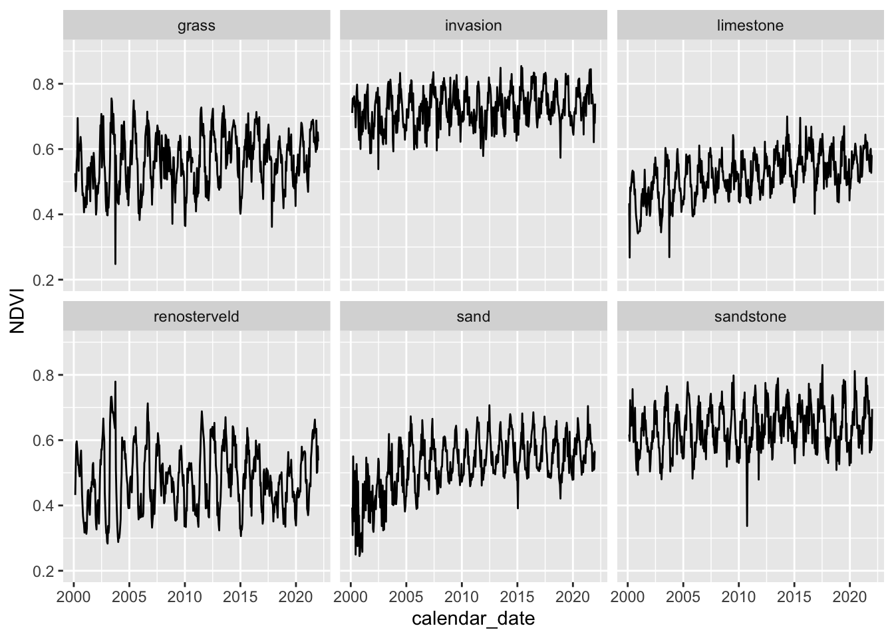
Now let’s fit the model and plot the model fit (blue) over the observed data (black circles).
R code:
###Loop through sites fitting the model
# Get site names
sitnms <- unique(adat$site)
# Set initial parameters
par <- c(alpha = 0.2, gamma = 0.4, lambda = 0.5, A = 0.1, phi = -1)
# Make output table
out <- data.frame(initial = par)
par(mfrow=c(2,3))
for(i in 1:length(sitnms)) {
dat <- adat %>% filter(site == sitnms[i])
# calculate age from date
dat$age <- (as.numeric(dat$calendar_date) - min(as.numeric(dat$calendar_date), na.rm = T))/365.25
# scale NDVI
dat$NDVI <- dat$value*dat$scale
# fit models
fit_negexpMLES <- fit.negexpS.MLE(dat, par)
# plot
plot.NDVI(dat, ylim = c(0.1, 0.9), main = sitnms[i])
# add curve with MLE parameters
lines(dat$age, pred.negexpS(fit_negexpMLES$par,dat$age), col = 'skyblue', lwd = 3)
# bind to output
out <- cbind(out, fit_negexpMLES$par)
}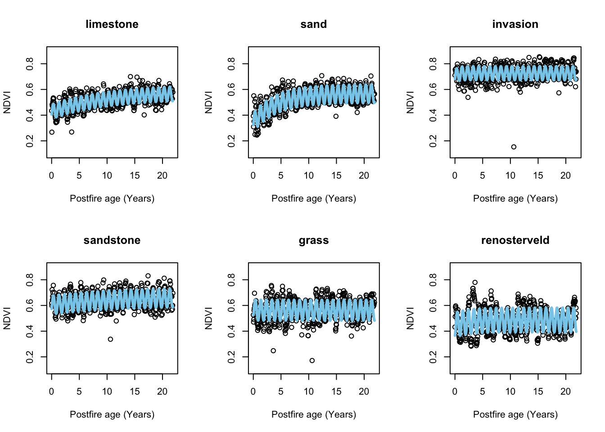
# Remove unnecessary objects to keep the workspace tidy
rm(i, par)And view a table of the parameter estimates
R code:
# tidy and present table
names(out) <- c("initial", sitnms)
out <- as.data.frame(t(out)[-1,])
# calculate maximum greeness (alpha + gamma)
out$alpha_gamma = out$alpha + out$gamma
kable(out, digits = 3)| alpha | gamma | lambda | A | phi | alpha_gamma | |
|---|---|---|---|---|---|---|
| limestone | 0.427 | 0.156 | 10.057 | 0.056 | -1.441 | 0.583 |
| sand | 0.343 | 0.225 | 4.150 | 0.072 | -1.326 | 0.568 |
| invasion | 0.695 | 0.031 | 0.459 | 0.054 | -1.296 | 0.727 |
| sandstone | 0.603 | 0.062 | 10.539 | 0.073 | -1.470 | 0.666 |
| grass | 0.579 | -0.016 | 0.003 | 0.080 | -1.762 | 0.563 |
| renosterveld | 0.449 | 0.038 | 2.670 | 0.095 | -2.101 | 0.487 |
Discussion hint: Are there any obvious properties of the time-series that are not captured by these parameters? How do they differ between sites and what may the causes be?
One issue here is sample size, because we only have a few sites… One could perhaps get around the sample size issue by using a satellite with finer ground sample distance that we could relate to each point location, such as Sentinel 2 (10m GSD vs MODIS 250m). I’ve extracted and plotted these data below.
sent <- read_csv("data/sentinel.csv")
###Plot all timeseries
sent %>%
ggplot(aes(x = calendar_date, y = value*scale)) +
geom_line() +
facet_grid(Site ~ Point) +
ylab("NDVI")Warning: Removed 1 row containing missing values or values outside the scale range
(`geom_line()`).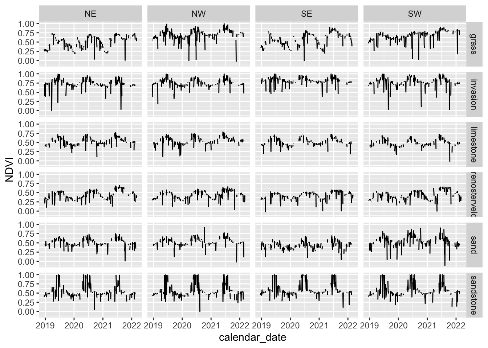
Unfortunately, as you can see the record is much shorter and there’s a lot of variability and big jumps in the NDVI value of the finer resolution instrument. We can still try to fit the model and see what we get though.
###Loop through site_points fitting the model
# Get joint site_point names
pntnms <- sort(unique(paste0(sent$Site, "_", sent$Point)))
sent$site_point <- paste0(sent$Site, "_", sent$Point)
# Set initial parameters
par <- c(alpha = 0.2, gamma = 0.4, lambda = 0.5, A = 0.1, phi = -1)
# Make output table
sout <- data.frame(initial = par)
par(mfrow=c(2,3))
for(i in 1:length(pntnms)) {
dat <- sent %>% filter(site_point == pntnms[i])
# calculate age from date
dat$age <- (as.numeric(dat$calendar_date) - as.numeric(as.Date("19920101", "%Y%m%d")))/365.25
# scale NDVI
dat$NDVI <- dat$value*dat$scale
# fit models
fit_negexpMLES <- fit.negexpS.MLE(dat, par)
# # plot
# plot.NDVI(dat, ylim = c(0, 1), main = sitnms[i])
#
# # add curve with MLE parameters
# lines(dat$age, pred.negexpS(fit_negexpMLES$par,dat$age), col = 'skyblue', lwd = 3)
# bind to output
sout <- cbind(sout, fit_negexpMLES$par)
}
# Remove unnecessary objects to keep the workspace tidy
rm(i, par)
# tidy and present table
names(sout) <- c("initial", pntnms)
sout <- as.data.frame(t(sout)[-1,])
sout$alpha_gamma = sout$alpha + sout$gamma
kable(sout, digits = 3)| alpha | gamma | lambda | A | phi | alpha_gamma | |
|---|---|---|---|---|---|---|
| grass_NE | -0.935 | 1.440 | 0.074 | -0.114 | 0.380 | 0.505 |
| grass_NW | 2.464 | -1.769 | 0.449 | 0.090 | -2.450 | 0.695 |
| grass_SE | 0.149 | 0.418 | 0.004 | -0.127 | 0.227 | 0.567 |
| grass_SW | 0.029 | 0.645 | 0.591 | -0.046 | 0.320 | 0.674 |
| invasion_NE | 0.369 | 0.361 | 1.191 | 0.083 | -2.395 | 0.730 |
| invasion_NW | -0.025 | 0.772 | 1.516 | 0.092 | -2.316 | 0.747 |
| invasion_SE | 1.505 | -0.701 | 2.041 | 0.055 | -2.588 | 0.803 |
| invasion_SW | 0.430 | 0.334 | 0.927 | 0.098 | -2.193 | 0.765 |
| limestone_NE | -2.122 | 2.643 | 1.825 | 0.096 | -2.455 | 0.521 |
| limestone_NW | 0.401 | 0.143 | 4.159 | 0.098 | -2.316 | 0.544 |
| limestone_SE | 0.425 | 0.078 | 1.064 | 0.097 | -2.401 | 0.504 |
| limestone_SW | -0.333 | 0.824 | 0.936 | 0.103 | -2.265 | 0.491 |
| renosterveld_NE | -2.372 | 2.817 | 0.009 | -0.105 | -0.002 | 0.446 |
| renosterveld_NW | 2.066 | -1.630 | 0.032 | -0.095 | 0.219 | 0.436 |
| renosterveld_SE | 0.163 | 0.259 | 0.325 | -0.077 | 0.026 | 0.422 |
| renosterveld_SW | 0.212 | 0.221 | 0.463 | -0.107 | -0.010 | 0.432 |
| sand_NE | -1.295 | 1.803 | 0.839 | 0.095 | -2.372 | 0.509 |
| sand_NW | 0.339 | 0.187 | 1.814 | 0.097 | -2.465 | 0.527 |
| sand_SE | 0.629 | -0.193 | 1.104 | 0.077 | -2.183 | 0.435 |
| sand_SW | 0.268 | 0.268 | 1.553 | 0.123 | -2.248 | 0.536 |
| sandstone_NE | -0.301 | 0.851 | 2.707 | 0.146 | -2.283 | 0.550 |
| sandstone_NW | 0.388 | 0.175 | 1.426 | 0.148 | -2.352 | 0.564 |
| sandstone_SE | 0.394 | 0.200 | 0.917 | 0.160 | -2.329 | 0.594 |
| sandstone_SW | 0.257 | 0.315 | 1.274 | 0.162 | -2.335 | 0.571 |
Statistical tests
Plotting
Here’s an example of how to make a boxplot of point location measures by site for one variable. You can make a panel of plots if you convert pdat into long format using pivot_longer() and adding + facet_wrap(~name, scales = "free") to the end of the plotting call (where name is whatever you provided for the names_to = argument in pivot_longer()).
R code:
# Make boxplot of any variable using point location data
pdat %>% ggplot() +
geom_boxplot(aes(y = CanopyCover, x = Site))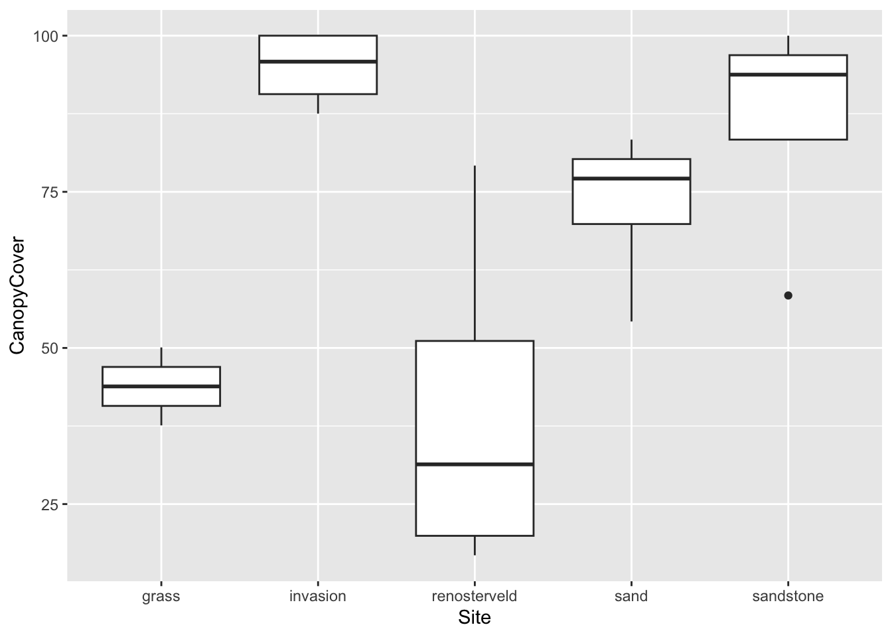
Test for significant difference among sites
Here we use the non-parametric Kruskal-Wallis rank sum test.
R code:
# Run non-parametric Kruskal-Wallis rank sum test
kruskal.test(CanopyCover ~ Site, data = pdat)
Kruskal-Wallis rank sum test
data: CanopyCover by Site
Kruskal-Wallis chi-squared = 14.246, df = 4, p-value = 0.006549And use Dunn’s posthoc test to explore where the differences lie.
R code:
# Dunn's Post hoc test to directly explore differences among sites
posthoc <- dunnTest(CanopyCover ~ Site, data = pdat,
method="bh")Warning: Site was coerced to a factor.kable(posthoc$res, digits = 3)| Comparison | Z | P.unadj | P.adj |
|---|---|---|---|
| grass - invasion | -2.816 | 0.005 | 0.024 |
| grass - renosterveld | 0.090 | 0.928 | 0.928 |
| invasion - renosterveld | 2.906 | 0.004 | 0.037 |
| grass - sand | -1.318 | 0.187 | 0.268 |
| invasion - sand | 1.498 | 0.134 | 0.268 |
| renosterveld - sand | -1.408 | 0.159 | 0.265 |
| grass - sandstone | -2.397 | 0.017 | 0.041 |
| invasion - sandstone | 0.419 | 0.675 | 0.750 |
| renosterveld - sandstone | -2.487 | 0.013 | 0.043 |
| sand - sandstone | -1.079 | 0.281 | 0.351 |
Correlations
e.g. Exploring relationships between measures of biodiversity and either environmental properties or measures of ecosystem function
This practical was a learning exercise and constrained by time and available resources. Perhaps the biggest drawback was the low number of (or lack of replication within) ecosystem types sampled. That said, plotting the relationships between the different site level variables gives us some indication of whether further sampling is likely to produce strong evidence of clear relationships. For this prac write up, I’ll forgive you for discussing significant (p < 0.05) or near-significant (p < 0.1) relationships based on a sample size of 6… Usually, this would not be okay…
# Join site level measures of ecosystem function and environment
out$Site <- rownames(out)
dat <- left_join(env, out)
# Plot biplots of all combinations of variables
pairs(dat[,-1])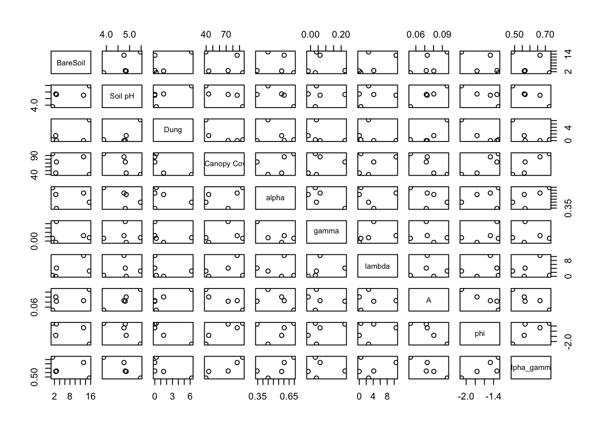
# Perform correlations of all combinations of variables
cor.table(dat[,-1])$r
BareSoil Soil pH Dung % Canopy Cover alpha
BareSoil 1.0000000 0.68026677 0.6164433 -0.2852437 -0.16312343
Soil pH 0.6802668 1.00000000 0.7248453 -0.8102876 -0.66407328
Dung 0.6164433 0.72484535 1.0000000 -0.7640847 -0.28701325
% Canopy Cover -0.2852437 -0.81028763 -0.7640847 1.0000000 0.43603458
alpha -0.1631234 -0.66407328 -0.2870132 0.4360346 1.00000000
gamma -0.1471386 0.05651833 -0.3269539 0.2788752 -0.73596903
lambda 0.5870608 0.18475865 -0.2579002 0.3790214 -0.09052831
A 0.6673584 0.97743485 0.8169335 -0.8879790 -0.53433020
phi -0.6139559 -0.80889039 -0.9284522 0.8896190 0.21945721
alpha_gamma -0.3835639 -0.92036592 -0.7414454 0.9133619 0.74937766
gamma lambda A phi alpha_gamma
BareSoil -0.14713859 0.58706080 0.66735842 -0.6139559 -0.3835639
Soil pH 0.05651833 0.18475865 0.97743485 -0.8088904 -0.9203659
Dung -0.32695391 -0.25790015 0.81693352 -0.9284522 -0.7414454
% Canopy Cover 0.27887519 0.37902145 -0.88797898 0.8896190 0.9133619
alpha -0.73596903 -0.09052831 -0.53433020 0.2194572 0.7493777
gamma 1.00000000 0.31418112 -0.13777024 0.4758352 -0.1032380
lambda 0.31418112 1.00000000 0.04598951 0.1987411 0.1742770
A -0.13777024 0.04598951 1.00000000 -0.9126694 -0.9197706
phi 0.47583524 0.19874115 -0.91266938 1.0000000 0.7878043
alpha_gamma -0.10323798 0.17427701 -0.91977061 0.7878043 1.0000000
$df
[1] 3
$P
BareSoil Soil pH Dung % Canopy Cover alpha
BareSoil 0.0000000 0.206301935 0.26813890 0.64180332 0.7932296
Soil pH 0.2063019 0.000000000 0.16592353 0.09631980 0.2215670
Dung 0.2681389 0.165923527 0.00000000 0.13257721 0.6396445
% Canopy Cover 0.6418033 0.096319796 0.13257721 0.00000000 0.4629551
alpha 0.7932296 0.221567025 0.63964451 0.46295512 0.0000000
gamma 0.8133355 0.928076961 0.59124991 0.64958277 0.1562502
lambda 0.2980158 0.766103280 0.67530864 0.52923211 0.8848934
A 0.2184458 0.004055233 0.09140009 0.04424332 0.3535944
phi 0.2706357 0.097364069 0.02272540 0.04328636 0.7228378
alpha_gamma 0.5238855 0.026651732 0.15155037 0.03021142 0.1448180
gamma lambda A phi alpha_gamma
BareSoil 0.8133355 0.2980158 0.218445820 0.27063571 0.52388546
Soil pH 0.9280770 0.7661033 0.004055233 0.09736407 0.02665173
Dung 0.5912499 0.6753086 0.091400093 0.02272540 0.15155037
% Canopy Cover 0.6495828 0.5292321 0.044243320 0.04328636 0.03021142
alpha 0.1562502 0.8848934 0.353594393 0.72283778 0.14481801
gamma 0.0000000 0.6066543 0.825141985 0.41785775 0.86878719
lambda 0.6066543 0.0000000 0.941464984 0.74863072 0.77923205
A 0.8251420 0.9414650 0.000000000 0.03057112 0.02694868
phi 0.4178577 0.7486307 0.030571115 0.00000000 0.11352938
alpha_gamma 0.8687872 0.7792321 0.026948677 0.11352938 0.00000000Note that these are r values and not $r^2$.
We can do the same for point level data:
# Join site level measures of ecosystem function and environment
sout$SitePoint <- rownames(sout)
point_ef_env <- left_join(penv, sout)
# Plot biplots of all combinations of variables
pairs(point_ef_env[,-1])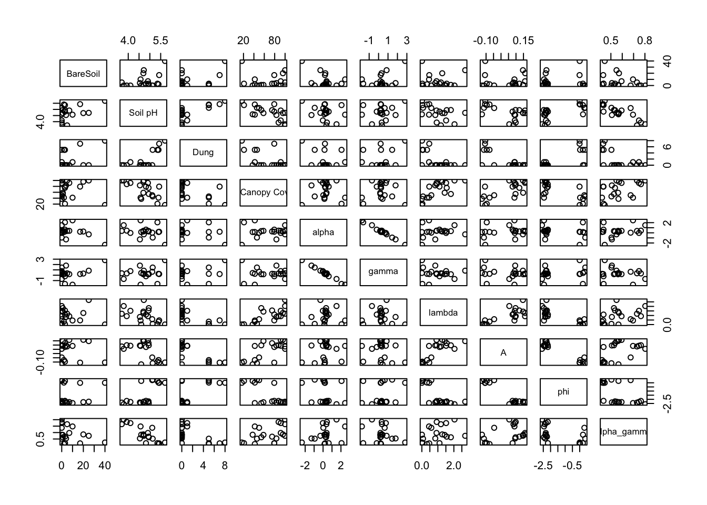
# Perform correlations of all combinations of variables
cor.table(point_ef_env[,-1])$r
BareSoil Soil pH Dung % Canopy Cover alpha
BareSoil 1.00000000 0.4002522 0.4554606 -0.086402836 -0.43729628
Soil pH 0.40025216 1.0000000 0.6914337 -0.665191748 -0.29851259
Dung 0.45546063 0.6914337 1.0000000 -0.569003732 -0.29848883
% Canopy Cover -0.08640284 -0.6651917 -0.5690037 1.000000000 0.05619548
alpha -0.43729628 -0.2985126 -0.2984888 0.056195483 1.00000000
gamma 0.41328444 0.2077338 0.2401209 -0.001376732 -0.99366394
lambda -0.01453807 -0.4934031 -0.6115792 0.721184980 0.10938317
A -0.05823843 -0.5328680 -0.7480129 0.693288926 0.19424282
phi 0.09319161 0.6653218 0.7126024 -0.705412014 -0.24599872
alpha_gamma -0.31996138 -0.8448857 -0.5719249 0.476797709 0.32260766
gamma lambda A phi alpha_gamma
BareSoil 0.413284443 -0.01453807 -0.05823843 0.09319161 -0.3199614
Soil pH 0.207733797 -0.49340310 -0.53286798 0.66532178 -0.8448857
Dung 0.240120867 -0.61157920 -0.74801285 0.71260240 -0.5719249
% Canopy Cover -0.001376732 0.72118498 0.69328893 -0.70541201 0.4767977
alpha -0.993663936 0.10938317 0.19424282 -0.24599872 0.3226077
gamma 1.000000000 -0.06885737 -0.15184940 0.19669874 -0.2141808
lambda -0.068857366 1.00000000 0.75997715 -0.76065364 0.3707474
A -0.151849404 0.75997715 1.00000000 -0.94242005 0.4093241
phi 0.196698742 -0.76065364 -0.94242005 1.00000000 -0.4814242
alpha_gamma -0.214180799 0.37074742 0.40932408 -0.48142421 1.0000000
$df
[1] 18
$P
BareSoil Soil pH Dung % Canopy Cover alpha
BareSoil 0.00000000 8.034541e-02 0.0435860921 0.7172000991 5.384315e-02
Soil pH 0.08034541 0.000000e+00 0.0007339015 0.0013721920 2.011020e-01
Dung 0.04358609 7.339015e-04 0.0000000000 0.0088373599 2.011396e-01
% Canopy Cover 0.71720010 1.372192e-03 0.0088373599 0.0000000000 8.139625e-01
alpha 0.05384315 2.011020e-01 0.2011396065 0.8139624771 0.000000e+00
gamma 0.07010663 3.794887e-01 0.3078578891 0.9954038446 1.527571e-18
lambda 0.95149243 2.705323e-02 0.0041652350 0.0003328406 6.461908e-01
A 0.80731876 1.555879e-02 0.0001492382 0.0007004635 4.118707e-01
phi 0.69595799 1.368145e-03 0.0004222358 0.0005121244 2.958022e-01
alpha_gamma 0.16905409 2.771555e-06 0.0084191996 0.0335391096 1.653587e-01
gamma lambda A phi alpha_gamma
BareSoil 7.010663e-02 0.9514924307 8.073188e-01 6.959580e-01 1.690541e-01
Soil pH 3.794887e-01 0.0270532315 1.555879e-02 1.368145e-03 2.771555e-06
Dung 3.078579e-01 0.0041652350 1.492382e-04 4.222358e-04 8.419200e-03
% Canopy Cover 9.954038e-01 0.0003328406 7.004635e-04 5.121244e-04 3.353911e-02
alpha 1.527571e-18 0.6461908326 4.118707e-01 2.958022e-01 1.653587e-01
gamma 0.000000e+00 0.7729994536 5.227658e-01 4.058672e-01 3.645355e-01
lambda 7.729995e-01 0.0000000000 1.010561e-04 9.878800e-05 1.075658e-01
A 5.227658e-01 0.0001010561 0.000000e+00 5.356282e-10 7.310845e-02
phi 4.058672e-01 0.0000987880 5.356282e-10 0.000000e+00 3.162135e-02
alpha_gamma 3.645355e-01 0.1075657846 7.310845e-02 3.162135e-02 0.000000e+00Test relationship among distance matrices
When working with measures of beta diversity you are automatically dealing with distance matrices (i.e. the difference between two or more samples) rather than tables of point estimates (i.e site specific measures of biodiversity etc). A major problem with distance matrices is that each sample is represented more than once (usually the total number of samples minus 1) in the distance matrix, which means that the entries in the distance matrix are not independent. This violates a major assumption of most traditional statistics. For example, one cannot apply a linear model to the graph below, because each site is represented multiple times in the points on the graph (e.g. Sandstone vs Sand, Sandstone vs Renosterveld, Standstone vs Grass, etc.
plot(as.dist(msampBFD[rownames(edis),colnames(edis)]) ~ as.dist(edis), ylab = "Functional Beta Diversity", xlab = "Environmental dissimilarity")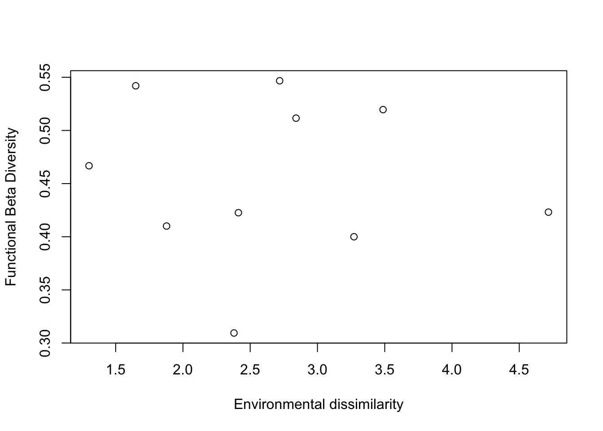
In this case we need to use methods that can explore correlations among distance matrices. Perhaps the most common of these is Mantel’s test, which in this case gives:
mantel(msampBFD[rownames(edis),colnames(edis)],edis)
Mantel statistic based on Pearson's product-moment correlation
Call:
mantel(xdis = msampBFD[rownames(edis), colnames(edis)], ydis = edis)
Mantel statistic r: -0.07351
Significance: 0.55
Upper quantiles of permutations (null model):
90% 95% 97.5% 99%
0.378 0.472 0.593 0.612
Permutation: free
Number of permutations: 119Testing for grouping of similarity among points within sites using analysis of variance using distance matrices (ADONIS)
ADONIS was developed to deal with the same issue of non-independence among data points.
This is a somewhat spurious example, because we’d be surprised if the species composition of our point samples weren’t more similar within than between sites, but the method may be handy for other analyses. see ?adonis for details.
R code:
# split the row names into a dataframe with separate columns for site and point
group_var <- separate(as.data.frame(row.names(point_comm)), col = 1, into = c("site", "point"), sep = "_")
# run adonis analysis and report results
adonis2(point_comm ~ site, data = group_var, permutations = 999, method = "bray")Permutation test for adonis under reduced model
Permutation: free
Number of permutations: 999
adonis2(formula = point_comm ~ site, data = group_var, permutations = 999, method = "bray")
Df SumOfSqs R2 F Pr(>F)
Model 4 3.8518 0.6135 5.9525 0.001 ***
Residual 15 2.4266 0.3865
Total 19 6.2784 1.0000
---
Signif. codes: 0 '***' 0.001 '**' 0.01 '*' 0.05 '.' 0.1 ' ' 1Note that the test above calculates the distances from a community data matrix using the specified method fed to the function (“bray” in this case, which is Bray-Curtis distance, but since all abundance values are 1, this is just Sorenson’s coefficient).
You can also feed the function a distance matrix. Here I test whether the environmental dissimilarity of our point samples is greater within than between sites by feeding the function the pedis environmental distance matrix we made earlier. Note that I remake the grouping variable from the names of the distance object to make sure that they align.
R code:
# split the row names into a dataframe with separate columns for site and point
group_var_pedis <- separate(as.data.frame(names(pedis)), col = 1, into = c("site", "point"), sep = "_")
# run adonis analysis and report results
adonis2(pedis ~ site, data = group_var_pedis, permutations = 999)Permutation test for adonis under reduced model
Permutation: free
Number of permutations: 999
adonis2(formula = pedis ~ site, data = group_var_pedis, permutations = 999)
Df SumOfSqs R2 F Pr(>F)
Model 4 52.468 0.69037 8.3611 0.001 ***
Residual 15 23.532 0.30963
Total 19 76.000 1.00000
---
Signif. codes: 0 '***' 0.001 '**' 0.01 '*' 0.05 '.' 0.1 ' ' 1References (papers accessible at this link)
Bergh, Nicola G., G. A. Verboom, Mathieu Rouget, and Richard M. Cowling. 2014. “Vegetation Types of the Greater Cape Floristic Region.” in Fynbos: Ecology, Evolution, and Conservation of a Megadiverse Region. Allsopp et al. (Eds)
Mucina, Ladislav, Michael C. Rutherford, and Others. 2006. The Vegetation of South Africa, Lesotho and Swaziland. South African National Biodiversity Institute. https://www.cabdirect.org/cabdirect/abstract/20073221934.
Petchey, Owen L., and Kevin J. Gaston. 2002. “Functional Diversity (FD), Species Richness and Community Composition.” Ecology Letters 5 (3): 402–11. https://doi.org/10.1046/j.1461-0248.2002.00339.x.
Plas, Fons van der. 2019. “Biodiversity and Ecosystem Functioning in Naturally Assembled Communities.” Biological Reviews of the Cambridge Philosophical Society 94 (4): 1220–45. https://doi.org/10.1111/brv.12499.
Slingsby, Jasper A., Glenn R. Moncrieff, and Adam M. Wilson. 2020. “Near-Real Time Forecasting and Change Detection for an Open Ecosystem with Complex Natural Dynamics.” ISPRS Journal of Photogrammetry and Remote Sensing. 166 (August): 15–25. https://doi.org/10.1016/j.isprsjprs.2020.05.017.
Wilson, Adam M., Andrew M. Latimer, and John A. Silander Jr. 2015. “Climatic Controls on Ecosystem Resilience: Postfire Regeneration in the Cape Floristic Region of South Africa.” Proceedings of the National Academy of Sciences of the United States of America 112 (29): 9058–63. https://doi.org/10.1073/pnas.1416710112.